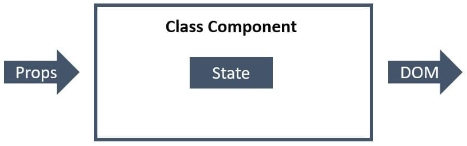

React
Модуль 1_1
React
– це бібліотека для створення елементів інтерфейсу користувача. У
React немає вбудованої маршрутизації, HTTP-модуля тощо. Проте є
багата екосистема, яка дозволить вирішити будь-яке завдання.
При створенні застосунку з використанням React розробник не
взаємодіє безпосередньо з DOM-деревом. Його завдання – описати
інтерфейс за допомогою компонентів (шаблон) та керувати зміною
даних (модель). React, при зміні даних моделі, сам оновить
інтерфейс за шаблоном.
React – мультиплатформний
розмітку можна рендерити на сервері ( Next.js ), писати нативні ( React Native ) або десктопні ( Electron ) застосунки.Для створення React-застосунку необхідні Node.js, Webpack, Babel, React і DevTools. Можна написати свою Webpack-збірку або взяти будь-яку хорошу з GitHub.
-
створення React-застосунку
Для навчання та маленьких/середніх проектів рекомендується використовувати утиліту від авторів React.
npx create-react-app ім'я_папки_проекту
Щоб створити застосунок у поточній папці, замість імені проекту ставиться крапка. Наприклад npx create-react-app .
React DevTools
В інструментах розробника можна подивитися на дерево компонентів, їх стан та пропси. Профайлер корисний під час оптимізації застосунку.
-
JSX (JavaScript Syntax Extension)
JSX створює елементи – найменші будівельні блоки React. Елементи Virtual DOM це звичайні JavaScript об'єкти, тому створювати їх дуже швидко.
Використовуючи JSX, розмітка стає схожою на звичні HTML-шаблони.
-
Усередині JSX можна використовувати будь-який валідний вираз, обертаючи його в фігурні дужки.
-
Значення атрибутів вказуються в подвійних лапках, якщо це звичайний рядок, та у фігурних дужках, якщо значення обчислюється, або тип відрізняється від рядка.
-
Всі атрибути React-елементів іменуються в camelCase нотації.
-
JSX-теги можуть бути батьками інших JSX-тегів. Якщо тег порожній або самозакривається, його обов'язково необхідно закрити використовуючи />.
const imageUrl =
"https://images.pexels.com/photos/461198/pexels-photo-461198.jpeg?dpr=2&h=480&w=640";
const productPrice = 10.99;
const product = (
< div>
< img src={imageUrl} alt="Tacos With Lime" width="640" />
< h2>Tacos With Lime< /h2>
< p>Price: {productPrice}$< /p>
< button type="button">Add to cart< /button>
< /div>
);
Рендер елементів у DOM-дерево
Для того, щоб відрендерувати елемент у DOM-дерево, у пакеті react-dom є методи createRoot(container) та render(element), які працюють разом.
Перший приймає посилання на існуючий DOM-елемент, наприклад div#root з index.html і створює корінь, в який буде рендеруватись вся програма.
Другий чекає на посилання на React-елемент або компонент (що рендерити).
ReactDOM.createRoot(document.getElementById("root")).render(product);
Правило спільного батька
Якщо в розмітці зайвий тег-обгортка не потрібний, використовуються фрагменти, схожі на DocumentFragment. Цей вбудований компонент при рендері розчиняється, підставляючи свій вміст.
import { Fragment } from "react";
const post = (
< Fragment>
< h2>Post Header< /h2>
< p>Post text< /p>
< /Fragment>
);
Синтаксис фрагментів можна скоротити та не додавати імпорт Fragment. Babel зробить всі необхідні трансформації, замінивши порожні JSX-теги на React.Fragment.
const post = (
< >
< h2>Post Header< /h2>
< p>Post text< /p>
< />
);
-
-
Компоненти
– основні будівельні блоки React-застосунків, за допомогою яких інтерфейс розділяється на незалежні частини.
Розробник створює невеликі компоненти, які можна поєднувати, щоб сформувати більші, або використовувати їх як самостійні елементи інтерфейсу. Найголовніше в цій концепції те, що і великі, і маленькі компоненти можна використовувати повторно і в поточному, і в новому проекті.
Компонент це окремо створений файл, в якому створена розмітка будьякого елемента (картки товару, лоадер, модалка і т д) який ми потім можемо підключити в будь-якому іншому компоненті (файлі) і перевикористовувати.
Також можна вставляти один компонент в інший при рендері.
В компонент не імпортуеться масив з елементами, всі данні передаються пропсами з основного файлу (App.js) де буде рендиритись компонент.
Пропси мають ключ="значення", зазвичай пропси називають так само як в ключі в об'єктах які передаємо. Пропси значення в пропсах передаємо в фігурних дужках price={product.price}, рядок (текст) в лапках.КОМПОНЕНТ
const Product = ({ imgUrl, name, price }) => (
< div>
< img src={imgUrl} alt={name} width="640" />
< h2>{name}< /h2>
< p>Price: {price}$< /p>
< button type="button" >Add to cart< /button>
< /div>
);
Тут ми імпортуемо компонент ProductList і в ньому рендиремо компонент Product
ФАЙЛ ОСНОВНИЙ З ЯКОГО РЕНДЕРИТЬСЯ ВЕСЬ ПРОЕКТ
import ProductList from "productList.js";
import Product from "product.js";
import products from "products.json"; // файл з масивом об'єктів продуктів
const App = () => (
< div>
< h1>Best selling products< /h1>
< ProductList >
< Product
imgUrl={products.imgUrl}
name="Tacos With Lime"
price={products.price}
/>
< /ProductList>
< /div>
);
Значення пропсів за замовчуванням
Що якщо компонент очікує якесь значення, а його не передали? - під час звернення до властивості об'єкта props отримаємо undefined.
Для того щоб вказати значення властивостей за замовчуванням, використовується синтаксис значень за замовчуванням під час деструктуризації пропсів.
import imageDefault from "../images/image.jpg";
const Product = ({
imgUrl = imageDefault,
name = "no name",
price = "please call at",
}) => (
- || -
);
Властивість props.children
Концепція дочірніх елементів дозволяє дуже просто робити композицію компонентів. У вигляді дітей можна передавати компоненти як вбудовані, так і кастомні. Це дуже зручно під час роботи зі складними складеними компонентами.
Властивість children автоматично доступна в кожному компоненті, її вмістом є те, що знаходиться між відкриваючим та закриваючим JSX-тегом.
У функціональних компонентах звертаємось як props.children.
Значенням props.children може бути практично все, що завгодно.
const Profile = ({ name, email }) => (
< div>
< p>Name: {name}< /p>
< p>Email: {email}< /p>
< /div>
);
const Panel = ({ title, children }) => (
< section>
< h2>{title}< /h2>
{children}
< /section>
);
const App = () => (
< div>
< Panel title="User profile">
< Profile name="Mango" email="mango@mail.com" />
< /Panel>
< /div>
);
Перевірка типів одержуваних пропсів Властивість propTypes
Пакет prop-types надає ряд валідаторів для перевірки коректності отриманих типів даних під час виконання коду, повідомляючи про невідповідності в консолі.npm install --save-dev prop-types
import PropTypes from "prop-types";
const Product = ({
imgUrl = "https://dummyimage.com/640x480/2a2a2a/ffffff&text=Product+image+placeholder",
name,
price,
}) => (
< div>
< img src={imgUrl} alt={name} width="640" />
< h2>{name}< /h2>
< p>Price: {price}$< /p>
< button type="button">Add to cart< /button>
< /div>
);
Product.propTypes = {
imgUrl: PropTypes.string,
name: PropTypes.string.isRequired,
price: PropTypes.number.isRequired,
};
-
Рендер за умовою
if за допомогою логічного оператора &&
Читається як: якщо умова приводиться до true, то рендерим розмітку.
const Mailbox = ({ unreadMessages }) => {
return (
< div>
< h1>Hello!< /h1>
{unreadMessages.length > 0 && (
< p>You have {unreadMessages.length} unread messages.< /p>
)}
< /div>
);
};
if...else за допомогою тернарного оператора
const Mailbox = ({ name, unreadMessages }) => {
return (
< div>
< h1>Hello {name}< /h1>
< p>
{unreadMessages.length > 0
? `You have ${unreadMessages.length} unread messages.`
: "No unread messages."}
< /p>
< /div>
);
};
-
Рендер колекції однотипних елементів
Списки і ключіДля того щоб відрендерити колекцію однотипних елементів, використовується метод Array.prototype.map(), callback-функція якого, для кожного елемента колекції повертає JSX-розмітку. Отже, отримуємо масив React-елементів, який можна рендерити.
Під час виконання коду з прикладу вище спливе попередження про те, що для елементів списку потрібен ключ. React не може відрізнити елементи в колекції, таким чином, перемальовуючи всю колекцію повністю у разі будь-яких змін.
Ключ (key) — це спеціальний рядковий проп, який потрібно задати під час створення елементів колекції.
Елементи всередині колекції повинні бути забезпечені ключами, щоб мати стабільну ідентичність. React використовує ключі, щоб визначити, які з елементів в колекції необхідно створити і відрендерити знову, а не використовувати елементи з попереднього рендеру. Таким чином ми уникаємо перестворення всіх елементів колекції щоразу, коли щось змінюється.
const favouriteBooks = [
{ id: "id-1", name: "JS for beginners" },
{ id: "id-2", name: "React basics" },
{ id: "id-3", name: "React Router overview" },
{ id: "id-4", name: "Redux in depth" },
];
const BookList = ({ books }) => (
< ul>
{books.map(book => (
< li key={book.id}>{book.name}< /li>
))}
< /ul>
);
-
Стилізація (SCSS, CSS)
-
CSS-модулі (основний метод для стилізації)
Create React App за замовчуванням підтримує CSS-модулі, все, що необхідно зробити це створювати файли стилів з розширенням .module.css, наприклад Alert.module.css. Всередині модуля CSS можна використовувати будь-який валідний CSS.
src/components/Alert.module.css
.alert {
margin: 8px;
padding: 12px 16px;
border-radius: 4px;
background-color: gray;
color: white;
}
Синтаксис імпорту CSS-модуля нагадує імпорт файлу JavaScript модуля. У CSS-модулі є експорт за замовчуванням - об'єкт відповідності оригінального та згенерованих імен класів. У фінальному файлі стилів буде унікальне ім'я класу у форматі [filename]_[classname]__[hash].
src/components/Alert.js
// Синтаксис імпорту CSS-модуля
import css from "./Alert.module.css";
// Отримуємо об'єкт відповідності імен класів
console.log(css); // { alert: "Alert_alert_ax7yz" }
const Alert = ({ children }) => {
// Звертаємось до властивості об'єкта на ім'я класу з файлу модуля
return < p className={css.alert}>{children}< /p>;
};
Властивість composes
Композиція селекторів це одна з ключових можливостей CSS-модулів, яка дозволяє створювати клас, наслідуючи стилі іншого класу, але не дублюючи їх. Наслідуємо стилі базового класу .alert у всіх класах варіантів. Властивість composes має передувати іншим правилам, щоб можна було перевизначити стилі, якщо це необхідно.
src/components/Alert.module.css
.alert {
margin: 8px;
padding: 12px 16px;
border-radius: 4px;
background-color: gray;
color: white;
}
.info {
composes: alert;
background-color: blue;
}
.success {
composes: alert;
background-color: green;
}
.error {
composes: alert;
background-color: red;
}
.warning {
composes: alert;
background-color: orange;
}
При композиції у простих випадках можна обійтися без бібліотеки clsx. Не задаємо базовий клас alert, тому що від нього виконано композицію класів варіантів. В результаті на елементі
будуть два класи, базовий alert і клас варіанта, у якому перевизначається значення кольору фону.
src/components/Alert.js
import css from "./Alert.module.css";
const Alert = ({ variant, children }) => {
return < p className={css[variant]}>{children}< /p>;
};
До властивостей об'єкта зазвичай звертаються як css.alert, але можна використовувати квадратні дужки, наприклад css["alert"]. Це корисно у випадку коли ім'я властивості зберігається у змінній, як у нас у пропсі variant.
Бібліотека clsx
Додамо CSS класи для вже знайомих нам пропсів outlined та elevated. Імена класи, що складаються з декількох слів записують у верблюжій нотації. В протилежному випадку, оскільки вони стають властивостями об'єкта, звертатися до них доведеться через квадратні дужки, наприклад css["is-outlined"], що менш зручно.
src/components/Alert.module.css
.alert {
margin: 8px;
padding: 12px 16px;
border-radius: 4px;
background-color: gray;
color: white;
}
.info {
composes: alert;
background-color: blue;
}
.success {
composes: alert;
background-color: green;
}
.error {
composes: alert;
background-color: red;
}
.warning {
composes: alert;
background-color: orange;
}
.alert.isOutlined {
outline: 1px solid black;
}
.alert.isElevated {
box-shadow: rgb(0 0 0 / 20%) 0px 3px 3px -2px,
rgb(0 0 0 / 14%) 0px 3px 4px 0px, rgb(0 0 0 / 12%) 0px 1px 8px 0px;
}
src/components/Alert.js
import clsx from "clsx";
import css from "./Alert.module.css";
const Alert = ({ variant, outlined, elevated, children }) => {
return (
< p
className={clsx(css[variant], {
[css.isOutlined]: outlined,
[css.isElevated]: elevated,
})}
>
{children}
< /p>
);
};
-
Вбудовані стилі
Існує кілька способів стилізації компонентів, найпростіший, але в той же час найбільш обмежений – це вбудовані стилі. Для цього використовується атрибут style, який у React приймає не рядок, а об'єкт стилів.
Створимо компонент Alert який буде рендерувати абзац тексту та приховає у собі майбутню логіку вибору кольору фону.
src/components/Alert.js
const alertStyles = {
margin: 8,
padding: "12px 16px",
borderRadius: 4,
backgroundColor: "gray",
color: "white",
};
export const Alert = ({ children }) => {
return < p style={alertStyles}>{children}< /p>;
};
Зробимо так, щоб залежно від типу оповіщення, у компоненті Alert змінювався колір фону абзацу. Для цього додамо йому обов'язковий пропс variant з кількома можливими значеннями.
src/components/App.js
import { Alert } from "./Alert";
const App = () => {
return (
<>
< Alert variant="info">
Would you like to browse our recommended products?
< /Alert>
< Alert variant="error">
There was an error during your last transaction
< /Alert>
< Alert variant="success">
Payment received, thank you for your purchase
< /Alert>
< Alert variant="warning">
Please update your profile contact information
< /Alert>
);
};
Логіку вибору кольору винесемо у функцію getBgColor(variant), яка буде повертати рядок із назвою кольору залежно від значення параметра variant.
src/components/Alert.js
const alertStyles = {
margin: 8,
padding: "12px 16px",
borderRadius: 4,
color: "white",
};
const getBgColor = variant => {
switch (variant) {
case "info":
return "blue";
case "success":
return "green";
case "error":
return "red";
case "warning":
return "orange";
default:
throw new Error(`Unsupported variant prop value - ${variant}`);
}
};
export const Alert = ({ variant, children }) => {
return (
< p style={{ ...alertStyles, backgroundColor: getBgColor(variant) }}>
{children}
< /p>
);
};
На практиці вбудовані стилі використовуються тільки для динамічно обчислюваних значень властивостей, у парі із зовнішніми таблицями стилів. В якості основного способу стилізації компонентів вбудовані стилі не використовуються в проектах та тому не рекомендуються.
-
Ванільний CSS
Оформлення компонента можна винести до таблиці стилів. У цьому випадку стилі кожного компонента оголошуються в окремому CSS-файлі з розширенням .css. Ім'я файлу складається з імені компонента та розширення. Наприклад, для компонента Alert, файл стилів буде називатися Alert.css.
src/components/Alert.css
.alert {
margin: 8px;
padding: 12px 16px;
border-radius: 4px;
background-color: gray;
color: white;
}
src/components/Alert.js
import "./Alert.css";
const Alert = ({ children }) => {
return < p className="alert">{children}< /p>;
};
Бібліотека clsx
Для вирішення більшості завдань, пов'язаних з безліччю класів, що задаються згідно з певними умовами, використовують бібліотеку clsx. Звичайно, JavaScript надає багатий синтаксис, але здебільшого пишуться непродуктивні рішення або код, що погано читається. Бібліотека стандартизує цей процес і робить його більш зручним за рахунок продуманого синтаксису.
npm install clsx
Функції clsx можна передати список виразів як набір аргументів. Вирази що приводяться до true, результат яких це рядок або число, буде додано у фінальний рядок класів.
import clsx from "clsx";
const className = clsx(
"first",
10,
undefined && "second",
true && "third",
false ? "fourth" : "fifth"
);
console.log(className); // "first 10 third fifth"
Ось як виглядатиме код компонента Alert використовуючи бібліотеку clsx.
src/components/Alert.js
import clsx from "clsx";
import "./Alert.css";
const Alert = ({ variant, outlined, elevated, children }) => {
return (
< p
className={clsx(
"alert",
variant,
outlined && "is-outlined",
elevated && "is-elevated"
)}
>
{children}
< /p>
);
};
Препроцесори
npm install sass
Використовувати препроцесори можна, але можливість композиції компонентів робить їх менш корисними, оскільки замінює такі концепції як домішки, функції, вкладеність та інші. Не рекомендується використовувати одні й ті самі CSS-класи в різних компонентах, для цього є композиція компонентів.
Наприклад, замість використання базового CSS-класу .button у компонентах < LoginButton> та < FollowButton>, краще створити компонент < Button> зі своїми власними стилями, які можуть відображатись у кількох варіантах. Тоді компоненти < LoginButton> та < FollowButton> можуть використовувати компонент < Button>, а не просто CSS-клас.
// Button.js
const Button = ({ variant, children }) => {
// Базові стилі кнопки з кількома варіантами відображення
return < button className={clsx("button", variant)}>{children}< /button>;
};
// LoginButton.js
const LoginButton = () => {
// Унікальна логіка кнопки логіна
return < Button variant="primary">Login< /Button>;
};
// FollowButton.js
const FollowButton = () => {
// Унікальна логіка кнопки підписки
return < Button variant="secondary">Follow< /Button>;
};
Правила іменування файлів такі ж, як і для ванільного CSS, відрізняється тільки розширення, наприклад .scss для SASS. В іншому у препроцесорів ті ж можливості, концепції та недоліки, що і у ванільного CSS. Для того щоб додати можливість використання SASS, встановіть його компілятор у проект.
Використання ванільного CSS теж не найкращий підхід і має ряд недоліків, особливо у великих проектах.
Слабка масштабованість
Обмежене повторне використання стилів
Для динамічних значень необхідно використовувати вбудовані стилі
Проблема глобального простору імен
Необхідність використовувати якусь конвенцію іменування селекторів класу
Відсутність автоматичного видалення коду, що не використовується.
-
Нормалізація стилів
Стилі елементів можуть відрізнятись між браузерами. Для того, щоб привести їх до стандартного вигляду, необхідно додати набір правил, що виправляє відмінності у стилях елементів між браузерами, наскільки це можливо.
У Create React App вбудована можливість використовувати PostCSS Normalize - суміш кількох популярних таблиць стилів (normalize.css та sanitize.css) з найкращими практиками нормалізації. Все, що необхідно зробити - це додати директиву @import-normalize; у будь-якому місці файлу стилів або CSS-модуля. Повторюючі імпорти будуть автоматично видалені, тому достатньо додати директиву до одного файлу стилів, наприклад index.css.
src/index.css
@import-normalize;
body {
font-family: sans-serif;
line-height: 1.5;
}
h1,
h2,
h3,
h4,
h5,
h6,
p {
margin: 0;
}
ul,
ol {
margin: 0;
padding: 0;
}
img {
display: block;
max-width: 100%;
height: auto;
}
-
Компоненти-класи
-
Компоненти-класи
Якщо необхідно додати динаміки, компоненти створюються як класи, тому що компоненти-функції (до хуків) обмежені можливістю створення розмітки за отриманими пропсами.
-
Звичайний ES6 клас, тому застосовуються правила: конструктор, методи, контекст (this).
-
Обов'язково розширює базовий клас React.Component.
-
Діє як функція, яка отримує props, але також реалізує приватний внутрішній стан.
-
Необхідно оголосити обов'язковий метод render(), який викликається за замовчуванням і повертає JSX-розмітку.
-
Щоразу під час використання компонента-класу, React буде створювати екземпляр компонента (класу), тому доступ до пропсів відбувається через this.props.
-
Можна визначити кастомні методи класу і використовувати їх в будь-якому місці, зокрема всередині JSX, викликати або передавати дітям як пропси.
-
Коли змінюється стан або пропcи компонента, відбувається його ререндер.
// Відокремлюйте іменовані імпорти, це підвищує читабельність коду
import React, { Component } from "react";
class MyClassComponent extends Component {
static defaultProps = {};
static propTypes = {};
render() {
return < div>Class Component< /div>;
}
}
-
-
Події
Обробка подій< button onClick={event => console.log(event)}>Click me!< /button>
Для нативної події браузера в React створюється об'єкт-обгортка SyntheticEvent Object з ідентичним інтерфейсом. Це необхідно, щоб забезпечити крос-браузерність та оптимізувати продуктивність.
-
Додавання обробника подій з EventTarget.addEventListener() майже не використовується, за рідкісним винятком.
-
Пропси подій – не виняток та іменуються за допомогою camelCase. Наприклад onClick, onChange, onSubmit, onMouseEnter.
-
У проп події передається посилання на callback-функцію, яка буде викликана під час настання події.
-
Обробники подій отримують екземпляр SyntheticEvent Object.
В React "під капотом" реалізовано делегування подій. Слухачі не додаються безпосередньо до DOM-елементів. Передача колбека – це просто реєстрація функції, яка буде викликана внутрішніми механізмами реакта під час настання події.
return ( < div>
< span>0< /span>
< button type="button" onClick={this.handleIncrement.bind(this)}>
Increment by {step}
< /button>
< button type="button" onClick={this.handleDecrement.bind(this)}>
Decrement by {step}
< /button>
< /div>
);
Прив'язка контексту (використовуємо такий спосіб)
Потрібно завжди пам'ятати про значення this у методах, що використовуються як callback-функції. В JavaScript контекст у методах класу не прив'язується за замовчуванням. Якщо забути прив'язати контекст, і передати метод як callback-функцію обробнику події, під час виклику функції this буде невизначений (undefined).
Тобто, коли передаємо колбек функції для обробки подій то потрібно передавати не як звичайний метод класу
// ❌ Погано
class Counter extends Component {
/* ... */
handleIncrement(evt) {
// ...
}
а передаємо як стрілочну функцію щоб привязало контекст
// ✅ Добре
class Counter extends Component {
/* ... */
handleIncrement = evt => {
/* ... */
};
Прив'язка в конструкторі
Ще один спосіб прив'язати контекст – зробити це у конструкторі класу. Якщо callback-функцій багато, можете уявити, наскільки великий може вийти конструктор.
Конструктор виконується один раз, тому bind викликається один раз
Методи класу записуються у властивість prototype функції-конструктора
// ✅ Непогано
class Counter extends Component {
/* ... */
constructor() {
super();
this.handleIncrement = this.handleIncrement.bind(this);
this.handleDecrement = this.handleDecrement.bind(this);
}
-
-
Внутрішній стан компонента
Об'єкт-стану state – це властивість класу, яка не повинна безпосередньо змінюватися розробником.
-
Дані в state контролюють те, що відображається в інтерфейсі.
-
Дані, що зберігаються у стані, повинні бути інформацією, яка буде оновлюватися методами компонента.
-
Не потрібно дублювати дані з props у стані.
-
Щоразу, коли змінюється стан компонента (або пропси), викликається метод render().
-
Інтерфейс залежить від стану компонента.
-
Стан може змінитися як реакція на дії користувача.
-
Під час зміни стану дані передаються вниз по дереву компонентів.
-
Компоненти повертають оновлену розмітку і змінюється інтерфейс.
Стан належить компоненту і змінюється тільки його методами.
Стан оголошується в конструкторі, оскільки це перше, що відбувається, коли створюється екземпляр класу.class Counter extends Component {
constructor() {
super();
this.state = {
value: 0,
};
}
render() {
return (
< div>
< span>{this.state.value}< /span>
{/* ... */}
< /div>
);
}
}
Початковий стан від props (як задати дефолтні значення в класах)
class Counter extends Component {
static defaultProps = {
step: 1,
initialValue: 0,
};
constructor(props) {
super(props);
this.state = {
value: this.props.initialValue,
};
}
В реакті не потрібно створювати конструктор а вказуємо стан як публічну властивість, все інше за нас зробить Babel
В МІСТО ЦЬОГО constructor()
class Counter extends Component {
constructor(props) {
super(props);
this.state = {value: this.props.initialValue, }}
}
СТВОРЮЄМО state = {}
class Counter extends Component {
state = {value: this.props.initialValue,};
// ... //
}
Зміна стану компонента
Для оновлення стану використовується вбудований метод setState().
setState(updater, callback)
Першим, обов'язковим аргументом, передається об'єкт з полями, які вказують, яку частину стану необхідно змінити.
Другим, необов'язковим аргументом, можна передати callback-функцію, яка виконається після зміни стану.
class Toggle extends Component {
state = { isOpen: false };
show = () => this.setState({ isOpen: true });
hide = () => this.setState({ isOpen: false });
render() {
const { isOpen } = this.state;
const { children } = this.props;
return (
<>
< button onClick={this.show}>Show< /button>
< button onClick={this.hide}>Hide< /button>
{isOpen && children}
);
}
}
Під час виклику setState() не потрібно передавати всі властивості, що зберігаються у стані. Достатньо вказати лише ту частину (зріз) стану, яку ми хочемо змінити у цій операції.
Актуальний стан і пропси на момент асинхронного виконання функції, переданої в setState(), будуть передані в неї аргументами state і props. Таким чином, можна бути впевненими у коректному значенні попереднього стану під час створення наступного.
setState з функцією нове значення обчислюється на підставі попереднього стану (prevState -попередній стан)
// Припустимо, що є такий стан
state = { value: 0 };
// Запустимо цикл і створимо 3 операції оновлення
for (let i = 0; i < 3; i += 1) {
// Якщо переглянути стан, на всіх ітераціях буде 0
// Тому що це синхронний код та оновлення стану ще не відбулося
console.log(this.state.value); // 0
this.setState(prevState => {
// Якщо переглянути стан, переданий callback-функції під час її виклику,
// отримаємо актуальний стан на момент оновлення.
console.log(prevState.value); // буде різний на кожній ітерації
return { value: prevState.value + 1 };
});
}
Тепер можемо замінити функціонал відкрити/закрити у компоненті
.
class Toggle extends Component {
state = { isOpen: false };
toggle = () => {
this.setState(state => ({ isOpen: !state.isOpen }));
};
render() {
const { isOpen } = this.state;
const { children } = this.props;
return (
< div>
< button onClick={this.toggle}>{isOpen ? "Hide" : "Show"}< /button>
{isOpen && children}
< /div>
);
}
}
Підіймання стану (зміна стану батька під час події в дитині)
Оскільки React використовує односпрямований потік даних зверху вниз, для того щоб змінити стан батька під час події в дитині, використовується наступний патерн з callback-функцією.
-
У батька є стан і метод, який його змінює.
-
Дочірньому елементу у формі пропу передається метод батька, що змінює стан батька.
-
У дочірньому елементі відбувається виклик переданого йому методу. – Під час виклику цього методу змінюється стан батька.
-
Відбувається рендер піддерева компонентів батька.
// Button отримує функцію changeMessage (ім'я пропа),
// яка викликається під час події onClick
const Button = ({ changeMessage, label }) => (
< button type="button" onClick={changeMessage}>
{label}
< /button>
);
class App extends Component {
state = {
message: new Date().toLocaleTimeString(),
};
// Метод, який будемо передавати в Button для виклику під час кліку
updateMessage = evt => {
console.log(evt); // Доступний об'єкт події
this.setState({
message: new Date().toLocaleTimeString(),
});
};
render() {
return (
<>
< span>{this.state.message}< /span>
< Button label="Change message" changeMessage={this.updateMessage} />
);
}
}
Типи внутрішніх даних компонента-класу
-
static data
– статичні властивості і методи, до яких необхідно отримувати доступ без екземпляра. -
this.state.data
– динамічні дані, що змінюються методами компонента, стан. -
this.data
– дані, які будуть різні для кожного екземпляра. -
const DATA
– константи, дані, які не змінюються, та однакові для всіх екземплярів.
-
-